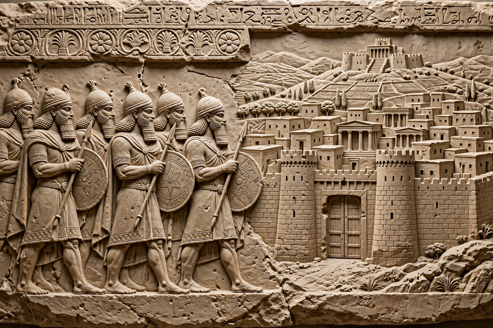

The Arameans were an ancient people group of Northwest Semitic origin and closely related to the Hebrews, Phoenicians and Arabs. During the Iron Age, they inhabited Aram (modern-day Syria, southeastern Anatolia, and parts of Lebanon and Iraq) and founded a patchwork of independent Aramaean kingdoms — also called city-states — in the Levant and Mesopotamia, most notably Aram-Damascus.

Arameans first appear in inscriptions of the late 12th century BCE, in the upheavals following the Late Bronze Age collapse. By the 10th–9th centuries BCE, kingdoms such as Bit-Agusi, Bit-Adini, Sam'al, and Aram-Damascus were significant powers, frequently at war with Israel, Assyria, and each other. The Neo-Assyrian Empire progressively conquered the Aramean states in the 9th–8th centuries BCE; deportations and the Assyrians' adoption of Aramaic as an administrative language spread Aramean culture and language across the empire.
The Arameans' most enduring legacy is their language: Aramaic became the lingua franca of the Near East under the Achaemenid Persian Empire and remained so for a thousand years. It was the everyday language of Roman-era Judea — the language most likely spoken by Jesus — and survives today in Neo-Aramaic dialects spoken by Assyrian and other Christian communities, as well as in the liturgical Syriac tradition. The Aramaic alphabet was ancestral to the Hebrew square script, the Arabic script, and others.
Today, Aramean identity is maintained by diaspora communities (notably in Sweden, Germany, the Netherlands, and the United States), especially among Syriac Christians of the Syrian Orthodox and related churches, a topic sometimes discussed alongside Assyrian identity debates.